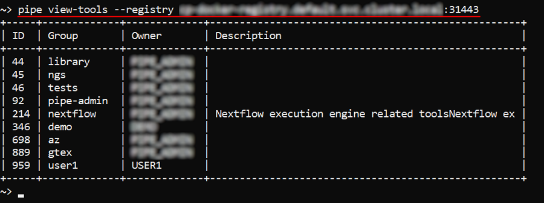
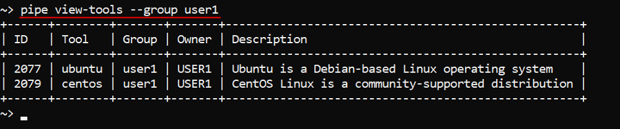

14.8. View tools definitions via CLI
- View a list of groups in the registry
- View a list of tools in the group
- View a tool definition
- View tool version's details
- Using the "path" to view the object
Cloud Pipeline CLI has to be installed. See 14. Command-line interface (CLI).
Via the CLI users can view details of a tool/specific tool version or tools groups.
The general command to perform these operations:
pipe view-tools [OPTIONS]
| Options | Description |
|---|---|
| Non-required options | |
-r / --registry |
Defines a specific Docker registry |
-g / --group |
Defines a specific tool group in a registry |
-t / --tool |
Defines a specific tool in a tool group |
-v / --version |
Defines a specific version of a tool |
Without any arguments that command will output a list of the tools contained in:
- In a personal tool group
- If not personal group is available - in the
libraryordefaulttool group - If none of the above is available - a corresponding warning will be printed
Note: If more than one registry exists on the current Cloud Pipeline deployment - Docker registry shall be forcibly specified (
-rbecomes a mandatory option) or the corresponding error message will be printed.
View a list of groups in the registry
With specifying a Docker registry that command will output a list of tools groups of that registry.
Note: Docker registry shall be specified as <registry_name>:<port>.
E.g.:
pipe view-tools --registry <registry_name>:<port>

View a list of tools in the group
With specifying a tools group that command will output a list of tools in the specific group.
Note: If more than one registry exists in the current Cloud Pipeline deployment - Docker registry shall be also specified.
E.g.:
pipe view-tools [--registry <registry_name>] --group <group_name>

In the example above, the list of tools in user's personal tools group was printed.
View a tool definition
To view a specific tool's definition and the list of tool versions - use the tool name together with its group name.
Note: If more than one registry exists in the current Cloud Pipeline deployment - Docker registry shall be also specified.
E.g.:
pipe view-tools [--registry <registry_name>] --group <group_name> --tool <tool_name>

View tool version's details
To view details of a specific tool version - use the tool name together with the version and the group name.
Note: If more than one registry exists in the current Cloud Pipeline deployment - Docker registry shall be also specified.
E.g.:
pipe view-tools [--registry <registry_name>] --group <group_name> --tool <tool_name> --version <version_name>
Details of a specific tool version contain:
- tool definition
- list of the tool version execution settings (if specified)
- list of the tool version vulnerabilities
- list of the tool version packages

Using the "path" to view the object
Users also can view definitions via the "path" to the object (registry/group/tool). The "full path" format is: <registry_name>:<port>/<group_name>/<tool_name>:<verion_name>. In that case, the specifying of command options (-r/-g/-t/-v) is not required.
So:
pipe view-tools <registry_name>:<port>will show a list of tools groups in the specified registrypipe view-tools <registry_name>:<port>/<group_name>will show a list of tools in the specified grouppipe view-tools <registry_name>:<port>/<group_name>/<tool_name>will show a definition of the specified toolpipe view-tools <registry_name>:<port>/<group_name>/<tool_name>:<verion_name>will show details of the specified tool version